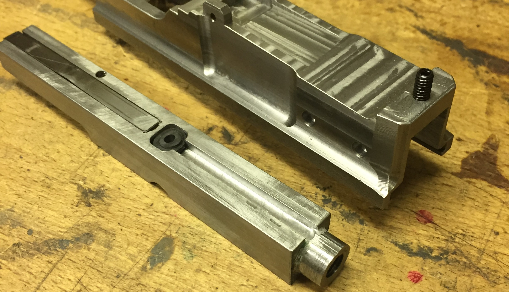

C32
Fall 2018
The C32 is a blowback pistol chambered in .32ACP. It was modeled on the Mauser C96 Pistol
Additional Finished Pictures (imgur)
Additional Progress Pictures (imgur)
Video of firing and Slow-motion (youtube)
This pistol is my first successful semi-automatic firearm, but was a developmental disaster that required multiple redesigns and modifications, so while the final product looks good, just know that it was a very bumpy road to get there. Internally, this pistol is oddly complex, because it was not designed as a blowback pistol. As designed, this was intended to be a short-recoil, roller-locked pistol, more similar to the original C96, and was designed to be chambered in 7.65 Parabellum (aka .30 Luger), a cartridge very similar to the original C96 cartridge. Then things happened. We'll get there. But for now, we'll look at what is probably the most complex single part I've ever made, the so-called Action Frame. This part has many features for many purposes, many of which were never implemented, and also has lots of complicated cuts just to save on weight, since I knew this was going to be a heavy pistol. The action frame held just about every component of the gun except the barrel and bolt. The mainspring was slung horizontal, contained entirely within the hollow action frame, which meant I didn't need to put the mainspring in the grip like I had on many other guns. However, with the mainspring occupying the center of the frame, I had to build the trigger and disconnector assembly on the outside of the frame. This was accomplished by building the trigger group as a series of layered plates, all with two identical copies, one on either side of the frame, with various cross-pins to link the two sets together. Sound uneccessary? It was.
The action frame
The basic idea was that the trigger is pulled, and a lug on the trigger applies a torque on the disconnector. The disconnector pivots on a pin that attaches it to the lifter bars, but the interaction between the disconnector and the trigger lug prevent the disconnector from initially rotating, so it instead creates an upward force on the lifter bars. These bars then pivot upwards and push up on the sear extension pins, which in turn rotate the sear up and out of engagement with the hammer, firing the gun. When the gun fires, the upper receiver slides backwards about 1/4" on it's rails, and a pin on the upper receiver rotates a lever that compresses the "short-recoil spring". This rearward travel shifts the locking roller, held by the roller carrier, rearward, to an area where surfaces on the lower receiver allow the roller to drop down and out of the locking surface of the bolt, unlocking the bolt. Simultaneously, when the roller is pushed down, it contacts the top surface of the disconnector, forcing it to rotate and popping it out of engagement with the trigger lug, which then slides past the disconnector. When the bolt cycles and comes forward again, once it is in a position where the roller can fit back into it's locking groove, the short-recoil spring will push the upper receiver forward, where the lower receiver's surfaces will cam the roller back up into the locked position. Once the trigger is released, it will move forward until the lug clicks back into place in front of the disconnector. Got that?
The trigger group in the frame. This picture also shows the upper receiver, already with bolt, recoil spring, and firing pin installed.
The upper receiver was milled in two parts, one large peice and a small plate on the bottom to retain the locking roller and the bolt. These two parts were then fitted together and eventually TIG welded together carefully. It may look complex, but most of that is cosmetic. The barrel is simple right now, I havn't turned it down yet (that'll be important later...) and has been button-rifled. A custom chamber reamer was made from O1 tool steel and the gun was headspaced. Few details here and there and we were ready for test firing! The gun was clamped in a vise and fired with a string, as my guns generally are. This was where the trouble began. Slow-motion footage revealed that the upper receiver was recoiling as intended, unlocking the bolt, but the residual momentum was insufficient to acheive primary extraction of the case. I tinkered with this issue for quite a while. Eventually I tried using a lighter powder charge (I had been handloading these rounds) in the hopes that lower pressure would prevent the case from getting stuck. At first, this seemed to be working, but then the gun exploded. Turns out, the gun squibbed due to the underloaded rounds, and the excess pressure from the squib on subsequent shots actually forced the extraction to work, for a bit, then there was a violent case-head seperation that shattered the temporary 3D-printed shell I had made by that point. That bull-barrel came in handy here; had I already profiled the barrel, there is a good chance it wouldn't have been able to handle this incident, and may have ruptured. That would have been a far more violent accident. As it happened though, it only stung my hand a bit. Lucky me.
The state of the gun prior to the detonation. I'm using a Keltec P11 magazine at this point. Note the thick barrel.

Best frame I have of the gun mid-explosion (I film all test shots). Most of the plastic shell is already gone. Note the ejector bent up and the smoke coming out the back of the bolt via the firing pin channel.
The accident destroyed the barrel, and I have no high-strength steel left to make another one, and I still hadn't figured out how to deal with the primary extraction issue without an accelerator, and there was no room in the gun to add an accelerator after-the-fact, so I decided to pivot. I took another barrel I had laying around from another project and used that, and it was .380 ACP. This less-powerful cartridge meant I could convert the gun to blowback safely. Figuring out how to do that took some trickery, however. I couldn't just remove the locking roller because that roller was serving double-duty by moving the disconnector, so instead I set up a bolt that locked the upper receiver toward the rear. This meant the locking roller would engage with the bolt, but was also freely pushed down by the bolt, because it was not in the locked position relative to the lower receiver. The magazine was also switched to a Makarov magazine (which somehow can hold .380 alright). This got me to a point where the gun was mostly functional and I began to continue working on other features. However, there was still a persistent issue; because the bolt was designed as a short-recoil bolt, it was very lightweight, far too underweight to really handle .380 ACP reliably. It wasn't bulging cases or anything, but it was putting a ton of stress on the gun, destroying recoil springs in just a few shots, bending the screws that hold the recoil spring lug in place, etc. Eventually there was another catastrophic failure, this time of the parts that make up the rearward travel stop of the bolt, so on firing, the bolt was launched rapidly out of the back of the gun. Good thing my face didn't happen to be there... So time for another rechambering. By this point I had more high-strength steel so I made and rifled another barrel, this time down to .32 ACP, using Berreta 3032 magazines. Finally, I was down to a level the lightweight bolt could withstand. That being said, the bolt stop was still sketchy and wasn't something I wanted to risk a fractured skull over so I milled out an area of the top of the bolt in which would run a heavy lug with a buffer that would function as the bolt end stop in a much gentler, safer way. The original stop was still there, so even if the main lug did fail (which is pretty infeasible, it's very overbuilt), the old stop would definitely catch it. This new stop, and especially the buffer, was the golden ticket and the gun worked great from then on.

The first trial version of the new stop and buffer, just using a setscrew for now. Note the rubber at the end of the slot for a buffer.

A photo of the finished gun, showing the final version of the recoil lug, a wide bar. This was found to be much nicer on the rubber buffer than a narrower pin.
At this point, gun was functionally finished, I just added a push-button magazine release. The sheet-metal shell I had for a while was replaced with a much heavier bent-and-welded steel plate shell in two pieces, with each half held to the frame by two machine screws, and then locked to eachother with another larger bolt. This was really only done for cosmetic reasons. The new shell was almost double the weight and took quite a while to fit, but it was nicer looking in the sense that it had large flat surfaces that could also have relief milled in them like the original C96. The 3D printed grip area was replaced with Aluminum and wooden grip panels were made. A faux tangent rear sight was made along with a dovetailed front sight in the now-profiled barrel. Then came the surface finish; I had hoped to rust-blue the gun, but I was unable to perfect the methods of rust bluing on my test parts, so I decided not to risk it on the whole gun. I was unwilling to use the cold-blues that I had used on previous guns, however, after seeing how terrible they were. So for this gun I decided to use a little-used technique called flame bluing. Which is to say I just degreased the parts thouroughly and then evenly heated them with a torch to around 650F. At this temperature, the steel in air takes on a pale blue hue that gets much richer when cooled back to room temperature and sealed with kerosene. The result is a mottled mix of deep blues and paler blue-greens, which I actually find quite pretty. It's interesting to note that the high-strength steel of the barrel and rear sight took on more of a dark plum color compared to the rest of the gun, which was low-carbon steel. The relatively high heat of this flame-bluing results in a fairly good coating that hasn't worn off too much so far anyways. Lower temperatures can give a variety of very vibrant colors, but those are far less wear-resistant than the high-temp light blue phase.
A good picture of the colors obtained by flame-bluing.
The finished gun.